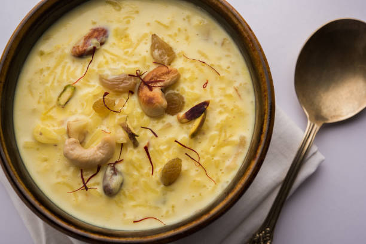
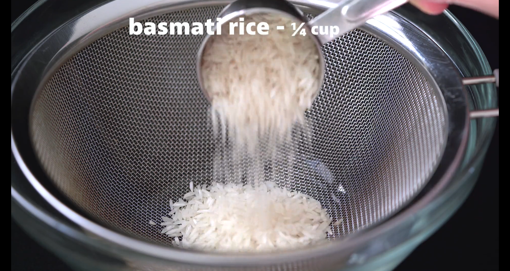

Recipe of the Day...!!!
KHEER

Kheer or Kheeri or Payesh, Payasam or Phirni is a type of rice pudding and famous Desert from the Indian, made with three ingredients - milk, sugar, and rice. It is typically flavored with coconut, cardamom, saffron, cashews, almonds, or other dry fruits and nuts.
It can be served Hot and Cold, depending upon your taste. In my opinion it works best when served cold. Also, my recipe here have additional ingredients but you can always try with the basic three only.
Kheer consistency is also a personal choice. I prefer my kheer thick. You can have your kheer thick or thin based on your preference.If you want to make kheer thick you can keep simmering interval long.
So lets get started...!!!
PREPARATION TIME
| Prep Time | Cook Time | Soaking Time | Total Time |
|---|---|---|---|
| 5 Mins | 40 Mins | 20 Mins | 45 mins |
INGREDIENTS
- 1/4 cup Rice (50 grams)
- 5-6 tablespoon Sugar (50 grams)
- 1L milk (Full fat preferable)
- 2-3 Cardamom
- 1 tablespoon of chopped nuts (you can use any nuts - I have used cashews, almonds and Golden raisin in my recipe.)
- 14-16 Saffron strands
METHOD
- Take 1/4 cups of rice (Basmati preferable). Rinse couple of times.
- Leave the rice to soak for about 15 to 20 minutes.
- Drain water and keep the rice aside.
- Meanwhile when the rice grains are soaking, Take 1L milk and let it boil on medium low flame.
- Stir at intervals so that the milk doesnt stick at the bottom
- Take 1 tablespoon of boiling milk, add saffron to it and keep it aside.
- When the milk is boiled, add the drained rice.
- Wait till the rice grains are half cooked.
- Add 5-6 tablespoons of sugar.
- Dont forget to stir at regular intervals
- Once the rice are fully cooked, add nuts and raisins.
- Add saffron mixed milk.
- Simmer untill the kheer thickens (cook untill your desired consistency is reached).
Voila..!! your kheer is ready..!!
VISUALS
